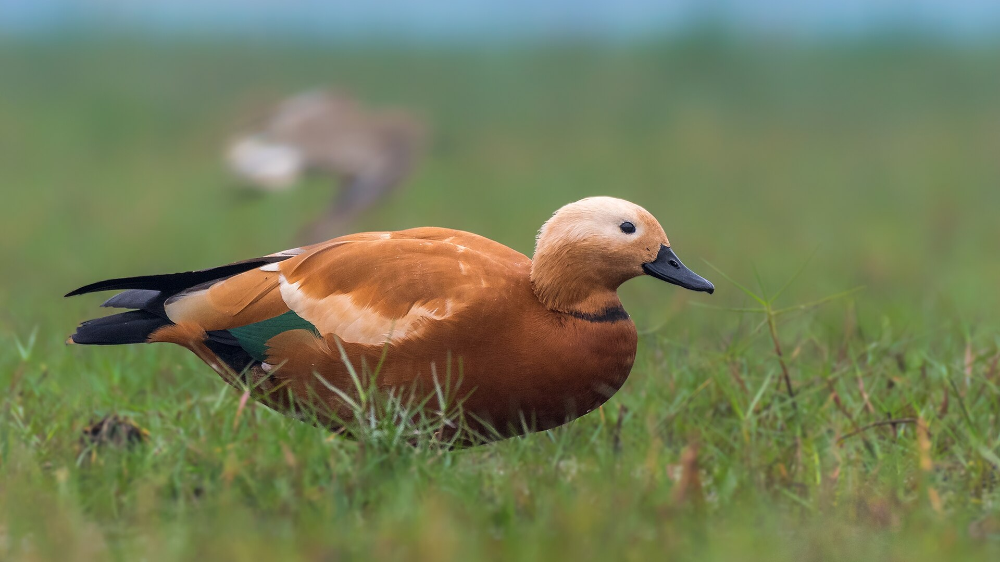
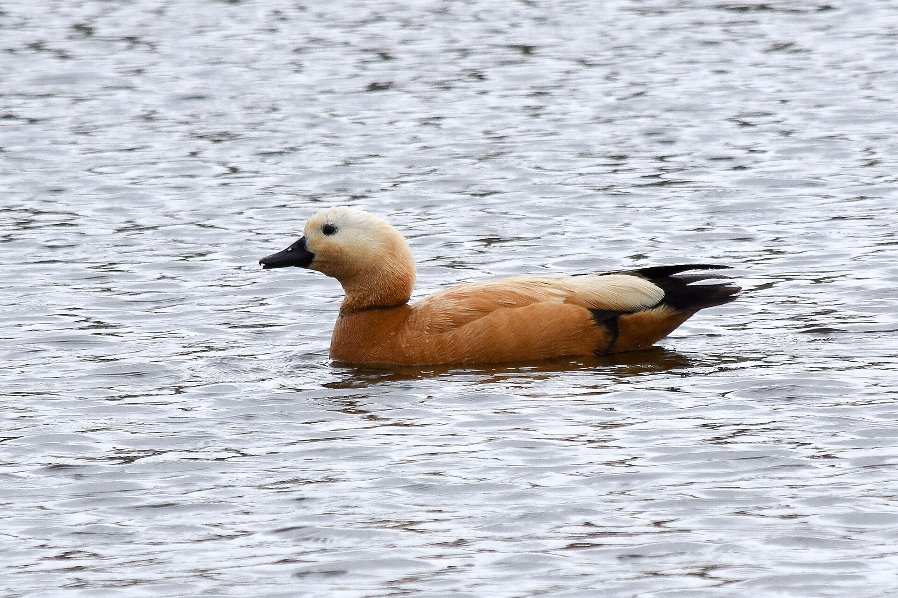

The Ruddy Shelduck is a striking orange-brown waterfowl found across Asia and parts of Europe. Its loud honking calls and graceful flight make it easy to spot near wetlands.

This shelduck prefers lakes, rivers, and marshes in open landscapes. It nests in burrows or cliffs, feeds on plants and small creatures, and migrates seasonally in flocks.
Read more about the Ruddy Shelduck and its wonderous characteristics on portals like E-Bird.